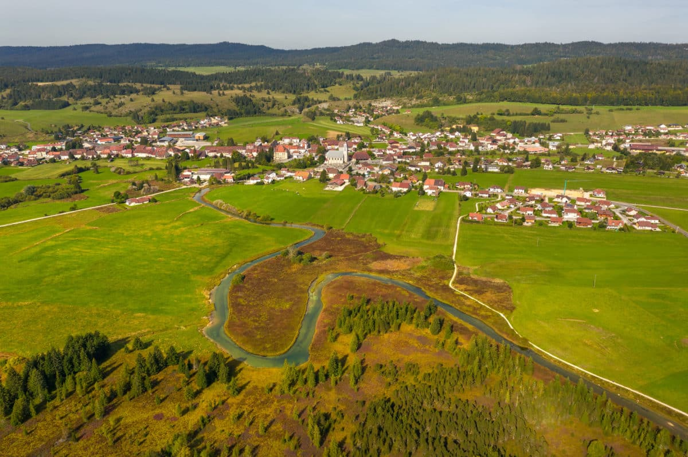
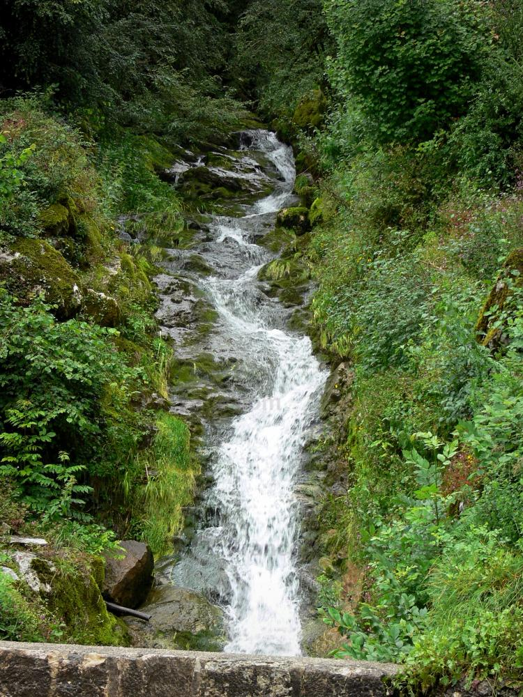
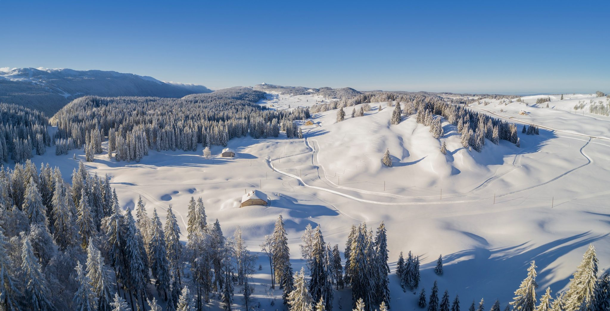

L'Observatoire du Territoire
Un outil de pilotage stratégique au service du massif
Le Socle Numérique de l'Observatoire
Dans le cadre de la mission « Observatoire du territoire du Parc naturel régional du Haut-Jura », la Présidence du Parc a initié la création d'un espace web cartographique. Ce dispositif constitue le socle numérique de l'Observatoire, un outil stratégique conçu pour centraliser la connaissance et assurer le suivi des indicateurs clés ainsi que valoriser les spécificités de notre région.
Localisation du Parc naturel régional du Haut-Jura en France

Source photo : unsplash.com
Pourquoi cet outil ?
La mise en place d'un observatoire du territoire dépasse largement le cadre d'un simple recueil de données géographiques ; il s'agit d'un véritable instrument de pilotage stratégique. Dans un contexte réglementaire de plus en plus exigeant, notamment avec les impératifs liés au Zéro Artificialisation Nette, cet outil permet aux collectivités de répondre à leurs obligations légales tout en transformant ces contraintes en opportunités de planification. Au-delà de l'aspect strictement réglementaire, l'observatoire constitue un levier de marketing territorial essentiel. En s'appuyant sur des indicateurs fiables et objectivés, il devient possible de valoriser les atouts d'un espace auprès des acteurs économiques et d'accroître l'attractivité de la région grâce à une communication basée sur des faits concrets.

Source photo : jura-tourism.com
Mesurer les évolutions
Le fait de mesurer les évolutions sur le territoire offre une capacité d'analyse indispensable pour identifier ses fragilités sociales et environnementales. Le suivi continu et le croisement des données spatiales dans le temps facilitent la détection de zones vulnérables, qu'il s'agisse de l'aggravation de la précarité énergétique ou de l'expansion des îlots de chaleur urbains, permettant ainsi d'orienter les politiques publiques avec une plus grande précision. Cette connaissance approfondie des dynamiques de terrain est également la clé d'une gestion durable des ressources. Qu'il s'agisse de la consommation foncière, de l'eau ou de l'énergie, l'observation de ces tendances aide à repérer les inefficacités et à cibler les interventions de manière optimale. En outre, la centralisation de ces informations historiques et actuelles favorise une coopération inter-institutionnelle beaucoup plus fluide. En partageant un référentiel unique sur les mutations du territoire, les différents échelons administratifs brisent les logiques de silos et mutualisent leurs efforts. Enfin, l'ouverture de ces données au grand public répond à une exigence démocratique croissante, en garantissant la transparence des décisions et en encourageant l'implication des citoyens dans les projets d'aménagement.
Découvrez le Haut-Jura en images
Plongez au cœur de notre territoire à travers cette courte immersion visuelle.
Source de la vidéo : @villedemorez-hautsdebienne8909
Comment ça marche ?
L’espace web cartographique que nous développons permet d’organiser et de diffuser l’ensemble des données collectées par le Parc et ses partenaires, dans le but de rendre l'accès à des informations parfois complexes et restreintes plus simple pour le plus grand nombre.